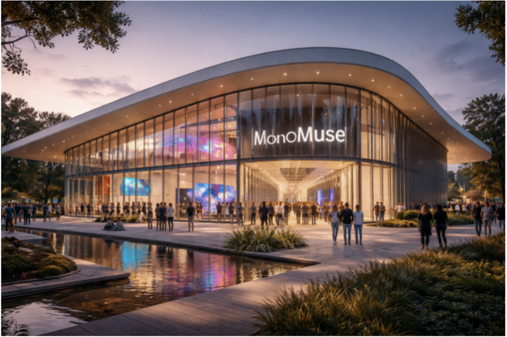

Mission Statement
MonoMuse explores the evolving relationship between art, technology, and society. Our mission is to inspire curiosity and creativity by presenting exhibitions and experiences that show how digital tools and human imagination shape the future of art.
Who We Serve
MonoMuse welcomes students, families, artists, researchers, and members of the local community. The museum is designed for both first-time visitors and returning guests who want to engage with innovative and interactive cultural experiences.
Founding Year
MonoMuse was founded in 2016 as a contemporary museum focused on connecting creative practice with emerging technology.
Milestones
- 2016: MonoMuse opens its doors with its first digital storytelling exhibition.
- 2018: Launch of the Interactive Media Lab, allowing visitors to experiment with creative coding.
- 2023: Expansion of the museum space and debut of international artist collaborations.